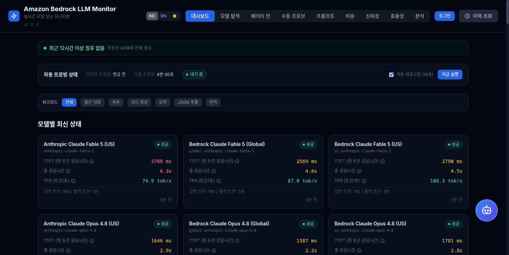
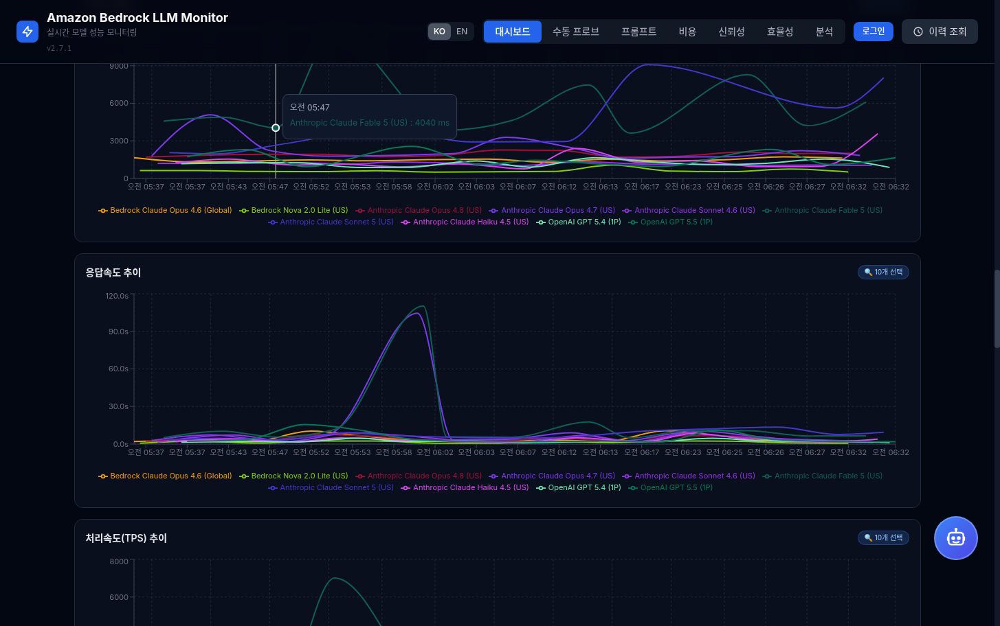
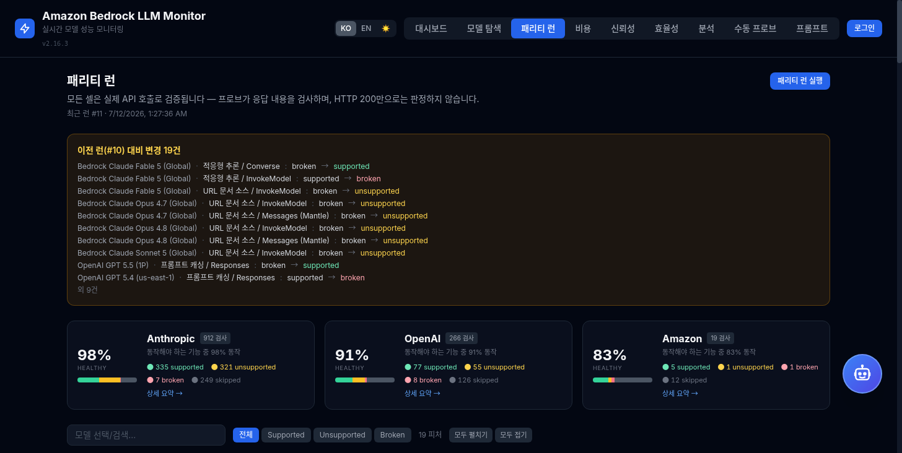
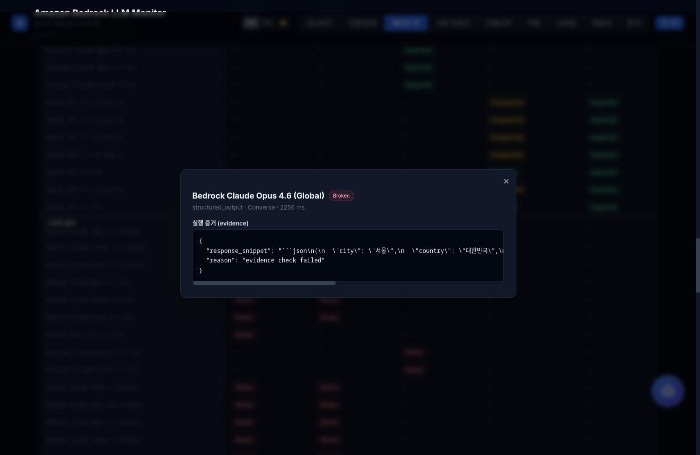
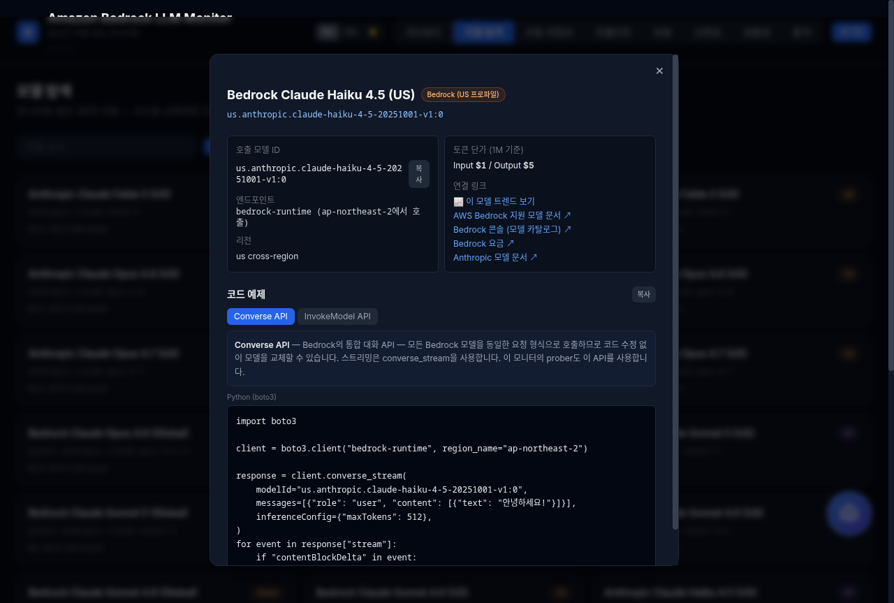
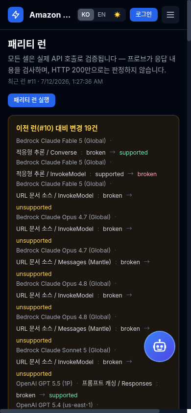
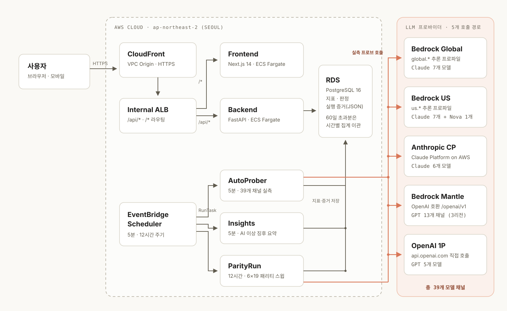

Measured, not quoted — 추정이 아닌 실측
LLM 28개 채널을
문서가 아닌 실측으로
Amazon Bedrock · Anthropic Claude Platform on AWS · OpenAI(Bedrock Mantle / 1P direct) — 5개 호출 경로의 응답 속도·처리량·신뢰성·비용·기능 패리티를 5분마다 실제 API 호출로 비교하는 실시간 대시보드입니다.
Why
왜 Bedrock LLM Monitor인가
멀티 프로바이더 시대에 "어느 경로로 어떤 모델을 쓸지"는 벤치마크 기사가 아니라 내 리전, 내 워크로드의 실측 데이터로 정해야 합니다.
실측 기반 판정
모든 지표와 패리티 셀은 5분·12시간 주기의 실제 API 호출로 만들어집니다. 추정치도, 문서 인용도 아닙니다. 셀을 클릭하면 판정에 사용된 Request/Response JSON 증거가 그대로 열립니다.
동일 조건 채널 비교
같은 모델 패밀리를 Bedrock Global/US 추론 프로파일, Claude Platform on AWS, Bedrock Mantle, OpenAI 1P direct로 같은 프롬프트·같은 시각에 호출해 진짜 사과-대-사과 비교를 제공합니다.
성능 너머까지 한 화면
30일 비용 예측, 채널별 성공률·에러 버킷, 0-100 토큰 효율 점수, stop reason 분포까지 — 그리고 AI 챗봇에 자연어로 물어보고 자동 인사이트 요약을 받습니다.
패리티 런의 원칙 — "HTTP 200은 증거가 아니다." 도구 카나리 왕복, JSON 스키마 파싱, 캐시 토큰 카운트 같은 응답 내용 검사를 통과해야 Supported로 판정합니다.
Features
기능
실시간 자동 프로빙
EventBridge Scheduler가 5분마다 Fargate 태스크를 기동해 6개 워크로드(대화·추론·코드·요약·JSON 추출·번역)를 라운드로빈으로 실측합니다.
트렌드 차트
TTFT·총 지연·TPS 시계열을 모델 다중 선택, 조회 기간, 워크로드 필터로 겹쳐 비교합니다.
피처 패리티 매트릭스
모델 × 6개 API surface × 19개 피처를 실행-증거로 판정. 접이식 그룹과 상태 분포 막대로 한눈에.
실행 증거 모달
매트릭스 셀 클릭 → 판정 근거와 Request/Response JSON. 직전 런 대비 변경(diff)은 상단 배너로 알립니다.
모델 탐색
모델 카드별 호출 ID·토큰 단가·문서 링크와 Converse/InvokeModel/Messages/Responses API 탭별 코드 예제.
비용 분석
30일 비용 예측, 모델별·채널별 비교 — 토큰 단가표 기반으로 산정합니다.
신뢰성 · 이상 징후
패밀리/채널별 성공률과 에러 버킷. 최근 12시간 프로브 실패는 대시보드 최상단 배너에 모델별로 요약됩니다.
효율성 · 출력 분석
워크로드별 0-100 가중 토큰 효율 점수와 stop reason 분포·출력 길이 히스토그램.
AI 챗봇 · 인사이트
Claude 기반 챗봇에 시계열을 자연어로 질의하고, 자동 인사이트 잡이 이상 징후를 한국어로 요약합니다.
Metrics
측정 지표
모든 지표는 클라이언트 측 스트리밍 실측 기준이며, Bedrock이 보고하는 서버 내부 지연과 분리해 기록합니다.
| 지표 | 단위 | 설명 |
|---|---|---|
| TTFT | ms | 요청부터 첫 토큰까지 — 체감 반응성을 결정하는 지표 |
| Total Latency | ms | 요청부터 마지막 토큰까지, 클라이언트 측 측정 |
| Server Latency | ms | Bedrock이 보고하는 내부 처리 시간 — 네트워크 오버헤드 제외 |
| TPS | tok/s | 첫 토큰 이후 출력 처리량 |
| Input / Output Tokens | count | 비용 산정과 토큰 효율 점수의 기초 데이터 |
| Stop Reason | enum | end_turn · max_tokens · tool_use 등 — 응답 품질 패턴 관찰 |
Screens
화면 둘러보기
아래 화면은 모두 실제 운영 대시보드에서 캡처한 화면입니다 — 최신 UI는 라이브 데모에서 직접 확인하세요.






Architecture
동작 원리
사용자 트래픽은 CloudFront → Internal ALB → Fargate로 흐르고, EventBridge Scheduler가 기동하는 AutoProber·ParityRun 태스크가 5개 호출 경로를 실측하며, Insights 태스크가 결과를 AI로 요약합니다.

모바일에서는 다이어그램이 세로로 회전되어 표시됩니다.
수집
EventBridge Scheduler가 Fargate one-shot 태스크 기동 — 5분 프로브 + 12시간 패리티 스윕.
판정
응답 내용 검사(카나리 왕복·JSON·캐시 토큰·스트림 델타)로 Supported / Unsupported / Broken 분류.
저장
RDS PostgreSQL에 지표·판정·증거(JSON) 저장. 60일 초과분은 시간별 집계로 이관.
시각화
Next.js 대시보드 8개 페이지 + 런 간 변경 diff 배너 + AI 인사이트 요약.
Stack & Trust
기술 스택
전체 인프라를 IaC(CDK 8개 스택)로 관리하고, 컨테이너 배포는 immutable digest 고정 원칙을 따릅니다.
Get Started
어느 채널이 빠른지, 지금 실측 데이터로 확인하세요
설치 없이 바로 열리는 라이브 대시보드입니다. 코드와 인프라 전체가 GitHub에 공개되어 있습니다.